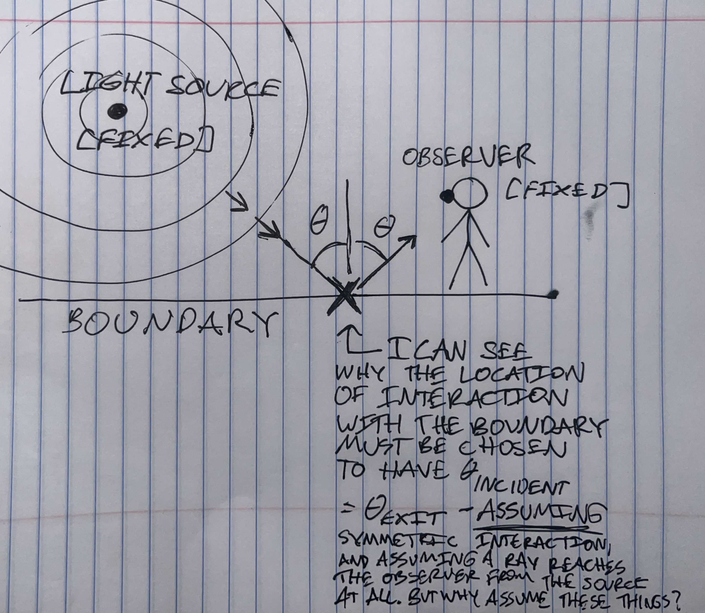
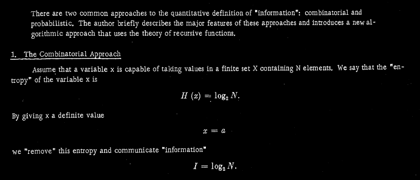
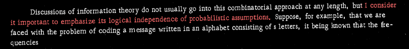
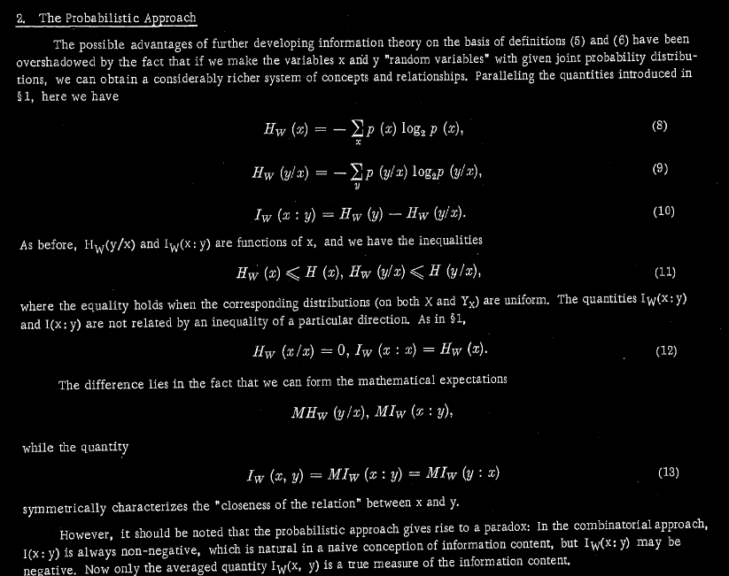

A cartoon visualizing my basic confusion about boundary optical laws

Here's an illustration of my basic confusion about optical laws involving boundaries, here using the law of [specular] reflection as an example.
I understand intuitively why it's possible to retrodict the location of the reflection or refraction point, if we know
the location of the observer
the location of the light source
that the light reflects[/refracts] off the boundary somewhere
that the light treats the boundary the same going out as it did going in [symmetrically] [modulo some kind of optional correction factor for the differential between the media on either side of the surface].
But I don't understand why the assumption of symmetrical interaction with the boundary should hold, just from fixing the location of the observer, the light source, and the boundary.
John von Neumann had a way of, against the admonitions of his betters, pointing out that it's possible for people to observe shit.
"Historically, utility was first conceived as quantitatively measurable, i.e. as a number. [ . . . ] [E]very measurement - or rather every claim of measurability - must ultimately be based on some immediate sensation, which possibly cannot and certainly need not be analyzed any further. In the case of utility the immediate sensation of preference - of one object or aggregate of objects as against another - provides this basis. [ . . . ] All this is strongly reminiscent of the conditions existant at the beginning of the theory of heat: that too was based on the intuitively clear concept of one body feeling warmer than another, yet there was no immediate way to express significantly by how much, or how many times, or in what sense."
--von Neumann and Morgenstern, Theory of Games and Economic Behavior
As far as I can tell, nowhere in his theory of macroscopic observables does he particularly rely on the work of Schrödinger to justify this assertion, and anyway, it isn't needed.
[ 15 January 2025 ]
Lagrangian Mechanics, and by Extension, Schrödinger Mechanics, is a Calculation Trick, not a Physical Theory
For obvious reasons, I'm having trouble believing I have to write this post. I mean, I'm having trouble believing the obvious face-value interpretation [to me] of the above paper-introduction [within the context of the rest of early-20C physics], which is that "the Schrödinger equation" has never had any empirical physical justification for existing.
I'm not trying to be mean. I'm not trying to blame Schrödinger. He clearly had a much more reasonably constrained idea of the applicability of his paradigm than the majority of his successors somehow ended up having, at least. And it wouldn't make sense in any other field to put the responsibility for "the entire field not going insane" on any one person, no matter how prominent, successful, or capable. People simply can't see the whole picture. My intent is to approach this with empathy and compassion and as little contempt or condescension as possible.
But Schrödinger [and, more relevantly, all his mentors] done fucked up.
Schrödinger states at the outset of this paper that his intention is to resolve the "grave difficulties" in "the theory of atomic mechanics" that have persisted "after [a] century-long development and refinement". I wrote in my margin notes when I first read it, "when you say 'the old theory', Schrödinger, do you mean Bohr's? Surely." I could feel history retroactively slipping out of its grooves when it turned out no, he'd meant Lagrange's [functionally indistinguishable from the later Hamiltonian formulation as far as I'm aware], which doesn't make any new predictions or have any new content on top of Newton's theory, and is simply a set of methods for reducing the dimensionality of complex systems for analysis according to Newton's paradigm.
It's my understanding that even before Planck, there were difficulties applying Newton's ideas to thermodynamic scales. Admittedly, my understanding here is hazy. I don't know whether Newton tried to unify his theory of momentum with his particulate theory of optics or not, and if so, how. Of course there would have been errors; light disrupts Newton's conceived static Euclidean spatial matrix significantly just by moving around.
[ Which, as I understand it, contrary to popular superstition [?], it's always doing. ]
To Schrödinger, if I'm reading correctly, Planck-Einstein-Bohr quanta represented just another in a long line of impediments to Lagrangian mechanics - but one that, he thought, might [via de Broglie's otherwise-bankrupt "matter waves" idea, constructed analogously with Planck's and Einstein's light-waves*] hold the key to its solution.
[ *I don't know if these are analogous with Huygens's; Huygens's have problems so much as explaining Snell's law without at least one unexplained parameter retrofitted to the data, AFAIK. But unlike Sussman and Wisdom†, if they thought they could explain Snell's Law, it isn't obvious to me that either Maxwell or Einstein must have been 90% wrong. ]
This is where Schrödinger and his mentors fucked up. Never mind Maxwell, never mind special relativity. Energy quantization alone is enough to break Newtonian - and therefore Lagrangian-Hamiltonian - mechanics. Prohibition of continuous energy changes is prohibition of continuous momentum changes, which are all Newton's mechanics succeeded at describing. I remember reading something once about how failure of a theory in any one domain, means the theory is "wrong" in all domains - presumably because "physicists have this arrogant idea that their models should work all the time, not just most of the time". At that point they should have just backed up and recognized the need for a new theory.
But Schrödinger tried to salvage Lagrangian mechanics by lossily hoisting its vague logic to an artificial domain where it actually kind of works on small scales if you squint, and no one stopped him. And now we have this instead.
[ †Note [may remove later]: a previous version of this post incorrectly attributed Sussman and Wisdom's confidence that Lagrangians could explain Snell's law to Landau. How could I mix up Landau's Mechanics with Sussman and Wisdom's Structure and Interpretation of Classical Mechanics? Well, they have a lot of the same content. ]
Never in my life have I felt such a combination of elation and rage at such a short segment of podcast. And that's saying something, given the podcast segments I've listened to.
Brown is allowed to say "What if we didn't just roll over and accept heat death?" because he has a degree, I guess? Anybody could've said that! Brown doesn't know anything special that implies "we don't have to accept heat death" is true as a factual claim! He just gets to say it! And Dwarkesh takes him seriously! While I had to learn in school, and have never been societally permitted to contradict, that heat death is the end for all humans, no ifs, ands or buts! Brown must not have been taught this in school, or he would be telling the story of how he realized it was an evil lie, or found someone who had realized it was an evil lie, and raged against those who had taught him so. And indeed, he recounts the takeover of the heat death paradigm like he knew another world. My brain is fundamentally pissed that child!Adam was not groomed for the Time Furnace, and he just sat there and let my generation be so groomed. I know that's not actually how it works, but my brain is still pissed.
[ 9 January 2025 ]
You are too dumb to understand insurance
"But with regard to the things that are done from fear of greater evils or or some noble object (e.g. if a tyrant were to order one to do something base, having one's parents and children in his power, and if one did the action they were to be saved, but otherwise would be put to death), it may be debated whether such actions are involuntary or voluntary. Something of the sort happens also with regard to the throwing of goods overboard in a storm; for in the abstract no one throws goods away voluntarily, but on condition of its securing the safety of himself and his crew any sensible man does so."
-- Aristotle, Nichomachean Ethics
* * *
10% chance/season of 1 voyage getting hit w/ a tropical storm [causing me to have to throw $1,000,000 worth of cargo overboard and compensate client accordingly]
Each successful voyage pays me $200,000
6 voyages / season
Depending on which voyage gets hit, a storm might put me into debt and force me to quit sailing until I can raise more capital, and in any case, it would negate my profits for the season.
I only make money in the timeline where I don't get hit at all, but this has a 90% chance of happening. I would then earn $1,200,000 x 90% = an expected profit of $1,080,000.
But I have a [ 1 - (9/10)^(1/6) ] ~= 1.7% chance of losing -$1M,
a (9/10)^(1/6)*~1.7% chance of losing net $200K - $1M = -$800K,
a (9/10)^(1/5)*~1.7% chance of losing net $400K - $1M = -$600K,
a (9/10)^(1/4)*~1.7% chance of losing net $600K - $1M = -$400K,
a (9/10)^(1/3)*~1.6% chance of losing net $800K - $1M = -$200K,
and a (9/10)^(1/2)*~1.6% chance of losing net $1M - $1M = $0.
Even though I have a 10% chance of one of the really bad outcomes happening to me, I still expect to profit by sailing this season.
In fact, I stand to profit big in the event of the median outcome, even though I stand to lose big in the event of the outlier outcomes.
Moriarty looks at the table. He considers the numbers.
They feel inefficient.
I expect to make $1,029,200, and the probabilities behind this figure are real, backed up by every nautical table, and if there was a table at a betting house being run on whether I'll get hit, they'd be backed up by every bookie - yet if the boat gets hit, I have nothing to show for it.
I have all this wealth - in a very valid sense, real wealth. I should be able to spend some of the money from the good timeline, on not having the losses be so devastating in the bad timelines!
He thinks.
He gets an idea.
He makes some notes on a paper, and he heads to the bar.
A few of his sailor friends are already there, and some of them are talking to other sailors. Within a few minutes he has a group with 9 other sailors together at a table. He gets them talking about this - he's good at that, he buys them all one round of drinks, and dives into the topic before they can get any drunker - and they agree, they're all in a similar situation. They'd like to be able to spend some of the money from their good timeline to mitigate the effects in their bad timelines, too. Wilhelmina says she remembers reading about this, and that it's called diminishing utility on the value of money, and that by the St. Petersburg argument it's implied for all rational agents. That seems to seal the deal for everyone that this line of thinking makes sense.
On Moriarty's suggestion, they draw up a contract to all pay $30,000 per successful voyage, so that a full $1M can be paid out to cover anyone who gets hit, and thus make the profits from their season positive, with some leeway, to be evenly distributed at the end of the season.
One hesitates to sign - Dennis. He says, "Wait, if the people who get hit once have their losses recovered, and they get to go back and continue the sailing season, doesn't that increase the total probability of being hit experienced by the group?"
Moriarty says, "Well, yes, but the expected return on each voyage is still positive, so it should still be okay."
Dennis says, "I don't know, I recall something called the Kelly criterion which says you shouldn't scale your willingness to make risky bets more than proportionally with available capital - that is, you shouldn't be just as eager to bet your capital away when you have a lot as when you have very little, or you'll go into the red much faster. It seems like maybe people who get hit once, and get the payout, should know when to hold 'em, as they say."
Jill says, "The whole point is so we can keep sailing."
Dennis says, "No, the whole point is so we can make money."
Wilhelmina says, "No, the whole point is so we can make utility.
Jill says, "Dennis, all of us are starting out with zero capital. If the idea was to not risk going into the red, shouldn't we just not sail? Like, I sort of get it, you're asking them to take one for the team, but not taking chances isn't what Kelly betting is about, it's about using the law of large numbers to reduce the volatility of your capital in random games once you get enough of it accumulated - which is the very thing we're trying to do, making this deal."
"Kelly betting is based on the assumption of a positive expected per-game return that is fixed as a percentage of the bet quantity -"
"- okay, then it doesn't apply -"
"- right, we're in a less risk-elastic scenario, meaning per-endeavor risk tolerance should grow even more slowly as a function of capital -"
"- then why are there rich sailors?"
"There aren't! There are rich sailing company owners, which is what you would expect to see under -"
Moriarty, who has been calculating the new numbers this whole time, holds his sheet up.
Next to the old failure probabilities for each voyage - 1.7%/1.7%/1.7%/1.7%/1.6%/1.6% - he's written down the new failure probabilities: 1.7%/1.7%/1.7%/1.7%/1.7%/1.7%. Next to the old expected profit - $1,029,200 - he's written down the new expected profit - $1,029,000.
"Yes", says Moriarty, "it'll cost us somewhat to make this deal, because there'll be more sailing and thus more incidents. But like I said, the expected return on each individual voyage is still positive, so we'll actually net make money by being able to sail more!"
"Utility", mumbles Wilhelmina.
Dennis fidgets. "We probably won't actually run into much problem if we just do this with the ten of us, but I'm just thinking - if we take this to its logical conclusion - the market for overseas transportation is calibrated to expect the quantity of supply - amortized over the season - that is available conditional on N incidents taking N sailors out of the market - roughly, that is, at least for sailors of around our means - for some particular N, that we'd be reducing. What we're doing will not only increase merchandise loss, but also increase total market supply without increasing service quality, causing prices to go down. Sure, we might not end up nominally making less, at the very least because of inflation, but in the long run, if everyone adopts this policy, are we sure we're not just shooting ourselves in the foot?"
Moriarty can't help but be a little irritated. "Would you rather be shot in the foot out at sea? That is, are you really that indifferent to suffering steep costs under high-volatility conditions, versus suffering marginal costs under low-volatility conditions?"
"I'll get shot in the foot out at sea either way", protests Dennis. "The sailing industry still goes into the same amount of net debt to its consumer market as a result of that one storm whether you guys pay it off for me and let me keep sailing, or I bow out of the game for the season and save up to pay it off myself."
George says "Well, yeah, but you're suffering high opportunity costs while you're scrounging to pay off debt incurred to your client, because you're taking time out of the labor market."
"For sailing?" Dennis says. "What I'm saying is, I don't think the extra money is really there in the market anyway."
"Sure it is," says Moriarty. "Clients are willing to pay $200,000 for their cargo being delivered on time!"
"Yeah, under the assumption that product losses will be fully recouped," says Dennis. "The market price doesn't reflect clients' true aversion to that risk. If it did, it would be lower."
"Can I ask what's probably a stupid question?" says Xena. All heads turn to the strange tall woman in the cloak that looks like it's woven with tiny threads of bronze. "For context," she says, "I'm not from around here." There's an abashedly delayed chorus of assent. Xena says, "This 'debt' thing - I've been warned, many times now, not just by you guys, by everyone I've asked for information since I arrived in this country - that I'll have to guard against it, as a contract sailor here."
"I've had no reason to doubt everyone's word for that, even though I don't understand, and what you - Moriarty - proposed tonight seemed like a reasonable scheme for guarding against it, as far as I can tell, so I've kept listening and nodding along. And I'm to the point of signing, if everyone else gets on board, because" - she gestures around - "this whole thing has the vibe of a true prospective market-breaking conspiracy, not a plant to trick a hapless foreigner out of her earnings, and I can't see how what you" - glance at Moriarty - "describe wouldn't work.
"But this debt thing. I haven't been able to get a straight answer from anybody on -" Xena's face twists with frustration "- anything! What it is, why we're doing it, how it works." She looks around. "Admittedly, I have some other questions, too, but that's the main one."
After that the conversation goes very differently.
Later that night, Moriarty fumes and shifts about in bed. If Xena had not been such an impressive and well-dressed woman, he thinks, or so articulate, then indeed it would have been easy for the company to laugh off her question and continue on with securing Dennis's signature.
But as it happened, no one could seem to give her a satisfying answer.
They'd talked about education, defense, and the problem of distributing naturally illiquid assets - she'd talked about "on-the-job-training" and ISAs, and a decision theory implying that you shouldn't pay racketeers, and some really complicated things about capital and rent-seeking, and "virtual LVT".
It was all unproven bullshit, as far as Moriarty was concerned - either foreigner religion, or tall tales flat out. But it had dissolved the company, and the prospective contract, and Moriarty's chances to insure himself against losing $1M on the season and risking his children's futures again. Xena had just kept getting more and more confused and skeptical, and everyone else had gotten infected with it, sounding less and less like they were trying to convince her and more and more like they were trying to convince themselves. In the end, the only contract that had gotten signed was a three-way marriage contract between her, Dennis, and Wilhelmina, who had all left the table to sail back immediately to Xena's home country. Dennis had left saying that, if he could get out of his student debt, he might be able to actually use what he'd learned studying for his degree. Wilhelmina hadn't had any debt, if she was to be believed, but had left saying that in Xena's society, she might be able to actually finance her speculative wastewater treatment idea. Xena had left predicting ill for Moriarty's venture and his people's entire way of life. Maybe so, thought Moriarty, but we've still got to keep living it.
Afterward, George had confessed to Moriarty that he'd considered asking to get in on the marriage contract and sail back with Xena, too, but he'd had a hunch his intelligence wasn't high enough to qualify him, and had chosen not to risk the embarrassment.
"Will you sign our contract?" Moriarty had asked. George had made noises with a faraway look in his eye, about writing down and trying to implement pieces of Xena's debt-free society among their own people. Moriarty, out of spite, had bought George a coffee and given him a pad of paper, and prayed for his machinations to go as well as they deserved. No amount of idealism, thinks Moriarty, can make you that much bronze for cloaks, and goes to sleep.
[ 9 January 2025 ]
My hairdryer solutions for my severe organization disability
Scott Alexander once wrote about a woman who had OCD and was perpetually worried she'd left her hairdryer on when she left for work:
> The Hair Dryer Incident was probably the biggest dispute I’ve seen in the mental hospital where I work. Most of the time all the psychiatrists get along and have pretty much the same opinion about important things, but people were at each other’s throats about the Hair Dryer Incident.
> Basically, this one obsessive compulsive woman would drive to work every morning and worry she had left the hair dryer on and it was going to burn down her house. So she’d drive back home to check that the hair dryer was off, then drive back to work, then worry that maybe she hadn’t really checked well enough, then drive back, and so on ten or twenty times a day.
> It’s a pretty typical case of obsessive-compulsive disorder, but it was really interfering with her life. She worked some high-powered job – I think a lawyer – and she was constantly late to everything because of this driving back and forth, to the point where her career was in a downspin and she thought she would have to quit and go on disability. She wasn’t able to go out with friends, she wasn’t even able to go to restaurants because she would keep fretting she left the hair dryer on at home and have to rush back. She’d seen countless psychiatrists, psychologists, and counselors, she’d done all sorts of therapy, she’d taken every medication in the book, and none of them had helped.
> So she came to my hospital and was seen by a colleague of mine, who told her “Hey, have you thought about just bringing the hair dryer with you?”
> And it worked.
> She would be driving to work in the morning, and she’d start worrying she’d left the hair dryer on and it was going to burn down her house, and so she’d look at the seat next to her, and there would be the hair dryer, right there. And she only had the one hair dryer, which was now accounted for. So she would let out a sigh of relief and keep driving to work.
> And approximately half the psychiatrists at my hospital thought this was absolutely scandalous, and This Is Not How One Treats Obsessive Compulsive Disorder, and what if it got out to the broader psychiatric community that instead of giving all of these high-tech medications and sophisticated therapies we were just telling people to put their hair dryers on the front seat of their car?
> But I think the guy deserved a medal. Here’s someone who was totally untreatable by the normal methods, with a debilitating condition, and a drop-dead simple intervention that nobody else had thought of gave her her life back. If one day I open up my own psychiatric practice, I am half-seriously considering using a picture of a hair dryer as the logo, just to let everyone know where I stand on this issue.
Instead of 'treating' her disorder - i.e., learning to Behave, to all outward appearances, in the normal fashion, despite her brain screaming at her to do something else - the woman simply nullified the negative effects her disorder would have on her life, by allowing it to make her behave unconventionally but not self-destructively.
Since for various reasons people are reluctant to grant weird-looking tricks that actually enable neuroatypical people to reduce their own problems the status of 'interventions', 'therapies', or 'treatment methods', I've taken to simply calling them 'hairdryer solutions'.
One of the weird neurological things I have, is that I have severe organization-disability. I cannot keep anything organized.
Today I posted some of my hairdryer solutions for this on Discord. I'm posting them here, too, in case either the object-level solutions or the illustration of the problem-solving approach [which I mainly learned from Inadequate Equilibria] helps anyone else.
What I do to mitigate the effects of my severe organization-disability:
I keep the number of items I really need in life under 10. If the list gets longer, it overflows memory and I'll lose an essential item every 2 days instead of every week. E.g. car keys, debit card, driver's license [ not 'wallet containing debit card and driver's license', because I will need to take my debit card out at some point, and I will not put it back in ], phone, earbuds, meds, sunglasses.
Rather than trying not to regularly lose my 5th-and-beyond-priority essential possessions, which is impossible, I am instead practiced at reacquiring copies of these possessions. E.g. I know most Walmarts carry my brand of sunglasses for ~$12, and my brand of earbuds for ~$25 [ this is, of course, why I picked these brands - to be cheap, because I constantly lose them! ] and I'm comfortable getting a new debit card from my bank.
I don't put anything in opaque drawers [ at home ] or bags [ out and about ], ever, because I'll either hopelessly forget what the hell is in there, rendering it all useless, or be constantly dumping it out to make sure I packed everything I need, and putting the stuff I really need back on the counter [ at home ] or in my arms/pockets [ out and about ] anyway.
I allow myself to clean only when absolutely necessary [ e.g. when guests are coming over ], as there is [ for me ] a high activation energy to cleaning/organizing that basically wipes me out for the day no matter how little time I spend on it, and I don't really mind living in mess by comparison. This includes being willing to reuse slightly-dirty tableware, or throw only 2 items at a time in the wash rather than pay the activation cost of Doing Laundry.
When I do Clean, I'm ruthless about throwing away things I don't need, no matter how much they cost or how emotionally attached I am to them. "Putting things Where They [ look like they ought to ] Go" is, for me, functionally equivalent to "tossing them in a black hole where I'll never have access to them again" because my brain will never remember their Societally Proper locations hidden away in a drawer rather than laid out on the floor or an open shelf, anyway. I moved last week and chucked not only my safe and my paper shredder, but half my furniture and my entire book collection, and it plausibly would have been the right decision even if I wasn't mainly doing it 'cause I'm crunched for space at my temporary new location.
[ 26 December 2024 ]
If You Want To Make An Information Theory Omelette, You've Got To Break A Few Information Theory Eggs
Kolmogorov [1965] is widely understood to have proven the asymptotic optimality of a new, algorithmic approach to quantifying the information content of binary strings, which is useful in some cases alongside the combinatorial and/or probabilistic formulations of Shannon entropy, but does not replace Shannon entropy.
This public image first underestimates Kolmogorov's paper: Kolmogorov's formula for calculating information content doesn't just supplement the two types of "Shannon entropy"; it obsoletes them.
It also overestimates the paper: Kolmogorov's formula for information content is clunky and incomplete and does not prove anything optimal in a way that is actually useful to computer programmers.
[ note: I'm choosing to simply state my conclusions here quickly without taking the time to go through my reasoning andragogically, because I want to use my conclusions now more than I want to justify them; if you want to help me come up with an andragogically functional formulation here, DM me on any platform and tell me why I'm wrong or ask me questions and I would be happy to argue with you. ]
1.
> a] As Kolmogorov notes, combinatorial "Shannon entropy" [ the kind where we model ourselves as configuring our probability distribution to predict only a single binary "next token" ] is not as rich as probabilistic "Shannon entropy".
> b] But also, probabilistic Shannon entropy is, I think, most appropriately framed as fundamentally an indexing scheme - an indexing scheme that doesn't make sense. And Kolmogorov complexity is an indexing scheme that makes much more sense. [Kolmogorov doesn't explicitly frame it in this way. His gripe with probabilistic Shannon entropy is in terms of how it can be negative, which I think is an even more valid reason to dispense with it, but which somehow many people did not find convincing.]
> What I mean by this is: Calculating the probabilistic Shannon entropy on something amounts to appraising the results of repeated random access [literally random access] on an analog-computer "hash table" with a R->R hash function [that is, continuous addressing and variable-width memory cells], and hence, it's equivalent to appraising the physical shape of that hash table in memory - the amount of physical space taken up in memory by each possible result of a random query [if that sounds like it's just how random variables work in conventional statistics, it is! I don't like it, and neither Kolmogorov nor Jaynes liked it either. It's not necessary, it's conventional for bad reasons].
> That is, if the probabilities are allowed to go in arbitrary ratios. If the probabilities have to go in integer ratios, then calculating the probabilistic Shannon entropy on something is only as ridiculous as appraising the shape of a regular Platonic R->N hash table [Platonic in the sense that, in the absence of any evidence, from-first-principles-in-the-void, this hash table is the shape in which one is assuming one's data to exist "in-the-territory", in the probabilistic Shannon formulation].
> And Kolmogorov complexity exchanges the implicit hash function for an explicit discrete generally recursive indexing function on binary strings, strictly [as far as I can tell] clarifying the situation [yes, I'm not explaining this very well at all; again, feel free to DM me]
2. However, when it comes time for Kolmogorov to actually formalize this new indexing scheme, which Kolmogorov does using two popular-at-the-time but dubious tools, binary and set theory,
> a] Kolmogorov's 'programming method' phi(p, x), which transforms a program object 'p' and a data object 'x' into an output 'y', is
>> i. load-bearing,
>> ii. more or less allowed to hide arbitrary complexity, and
>> iii. Kolmogorov doesn't give any good examples of 'programming methods' phi(p, x) or give any ideas for how to practically construct a good one.
> b] Kolmogorov's formula doesn't really rank complexity by the length of the program object needed to access the object y from the object x. Instead, complexity is ranked by the length of the programming object's index, under a not-at-all-specified indexing scheme. Kolmogorov's formulation doesn't even have a formulation for directly assessing the length of a data object, as opposed to getting the length of its index. I think it would be best if we had a way to judge based on the length of the program itself.
> These two factors, I think, render Kolmogorov's proof that there exists an asymptotically optimal [in the sense of always giving the shortest program index to access any object y_i] programming method phi, for any data object x, pretty un-anchored and meaningless/unhelpful.
I do think I have a better idea.
As Kolmogorov points out, it doesn't make sense to quantify information content unless we're working within some kind of template.
[ "It is, for example, meaningless to ask about the quantity of information conveyed by the sequence `0110` about the sequence `1100`" ]
and an information content of zero [? not sure about this part] or infinity makes just as little sense as a probability of zero or one [again, not explaining this well, please DM]
[ "Accordingly, we propose to define I_A(x : y) so that some indeterminacy remains." ]
Just as probability is now generally recognized to be best defined in terms of 'utility' or valence [and understood by me personally and many LessWrongers* as literally meaningless without reference to some valence function], I think information content should be defined with reference to valence content, too.
This, to me, immediately suggests a sensible global accessing function, to replace both Shannon's implicit hash function and Kolmogorov's floating indexing function: just use [a sufficient approximation of] the valence function itself! This is a tautology, but your valence function can definitely be defined to be generally recursive over desirable worlds, because you can just say the desirable worlds are those worlds which it finds most readily [i.e., those worlds the size of whose indices [or, equivalently, sufficient access-programs!] have smaller negative logarithms]. Then you can imagine specifying [ or constructing a toy simple valence function ] to search over desirable conlang words, desirable paintings, desirable novels . . .
However, one parameter is still free: valence function over what? How does the valence function "over worlds" work? How does it access [or, equivalently [? is this equivalent?], generate] two data objects to compare, and how does it compare them?
I think this is one of those cases where humans represent an existence proof that it can be done. But I will be pleasantly surprised if anyone can actually answer the question of how we do it. I leave this question here simply to show that I am aware the state of my model of info-quantity is just "marginally improved", not "complete".
*note: I think the word 'cursed' used in the linked post is too strong and suggests pessimization rather than [ nullification, which I think is the more accurate framing ].
[ 22 December 2024 ]
Kolmogorov Doesn't Think We Need "Entropy"
Set physical "entropy" aside for the moment.
Here are two mutually incompatible definitions of information-theoretic "entropy".
Both these definitions are ever known as "Shannon entropy". Kolmogorov, however, would have classed Soares's definition as, instead, a combinatorial definition of information,

and dispensed entirely with Wikipedia's notion of probabilistic "entropy":


[ 12 December 2024 ]
Moore's World: A Shot and Two Chasers
Shot [Wikipedia]:
"[Moore's Law] is named after Gordon Moore, the co-founder of Fairchild Semiconductor and Intel and former CEO of the latter, who in 1965 noted that the number of components per integrated circuit had been doubling every year, and projected this rate of growth could continue for at least another decade. In 1975, looking forward to the next decade, he revised the forecast to doubling every two years [ . . . ]"
Chaser 1 [Randall Hyde, The Art of Assembly Language Programming]:
"Intel might not have survived had it not been for a big stroke of luck - IBM decided to use the 8088 microprocessor in their personal computer system."
"To most computer historians, there were two watershed events in the history of the personal computer. The first was the introduction of the Visicalc spreadsheet program on the Apple II personal computer system. This single program demonstrated that there was a real reason for owning a computer beyond the nerdy "gee, I've got my own computer" excuse. Visicalc quickly (and, alas, briefly) made Apple Computer the largest PC company around. The second big event in the history of personal computers was, of course, the introduction of the IBM PC. The fact that IBM, a "real" computer company, would begin building PCs legitimized the market."
"[ . . . ] for a brief period, the introduction of the IBM PC was a godsend to most of the other computer manufacturers. The original IBM PC was underpowered and quite a bit more expensive than its counterparts. For example, a dual-floppy disk drive PC with 64 Kilobytes of memory and a monochrome display sold for $3,000. A comparable Apple II system with a color display sold for under $2,000. The original IBM PC with it's 4.77 MHz 8088 processor (that's four-point-seven-seven, not four hundred seventy-seven!) was only about two to three times as fast as the Apple II with its paltry 1 MHz eight-bit 6502 processor. The fact that most Apple II software was written by expert assembly language programmers while most (early) IBM software was written in a high level language (often interpreted) or by inexperienced 8086 assembly language programmers narrowed the gap even more.
Nonetheless, software development on PCs accelerated. The wide range of different (and incompatible) systems made software development somewhat risky. Those who did not have an emotional attachment to one particular company (and didn't have the resources to develop for more than one platform) generally decided to go with IBM's PC when developing their software.
About the time people began complaining about Intel's architecture, Intel began running an ad campaign bragging about how great their chip was. They quoted top executives at companies like Visicorp (the outfit selling Visicalc) who claimed that the segmented architecture was great. They also made a big deal about the fact that over a billion dollars worth of software had been written for their chip. This was all marketing hype, of course. Their chip was not particularly special. Indeed, the 8086's contemporaries (Z8000, 68000, and 16032) were architecturally superior. However, Intel was quite right about one thing - people had written a lot of software for the 8086 and most of the really good stuff was written in 8086 assembly language and could not be easily ported to the other processors. Worse, the software that people were writing for the 8086 was starting to get large; making it even more difficult to port it to the other chips. As a result, software developers were becoming locked into using the 8086 CPU."
[ subtext: I don't think the consumer market would have been this excruciatingly cautious, if the local volatility of inflation [which I should really explain in its own post] hadn't been pinned to FLT_MAX. ]
Chaser 2 [Wikipedia again]:
"each new generation process became known as a technology node or process node, designated by the process' minimum feature size in nanometers (or historically micrometers) of the process's transistor gate length, such as the "90 nm process". However, this has not been the case since 1994, and the number of nanometers used to name process nodes (see the International Technology Roadmap for Semiconductors) has become more of a marketing term that has no standardized relation with functional feature sizes or with transistor density (number of transistors per unit area)."
[ subtext: It's true that the nerfed, post-1975 version of Moore's law has nominally continued not-very-abated since 1975; however, after seeing this, I'm inclined to suspect the more recent nomination criteria somewhat. ]
[ 11 December 2024 ]
A receipt on those lights in the East
As Earth's new #1 Orientalist, I smugly present whatever this is [yes, I am claiming you, the reader, probably did not have this priced in]:
[ 11 December 2024 ]
Wow, Look What Happened To Moore's Law In 1971
If you Google around for corroboration, interestingly one of the first things you'll notice is that almost all the graphs start exactly at 1970. Almost as if they're all converging on framing the same nice pretty window in which things are kinda uniform, which breaks before that point.
[ originally published 8 December 2024 ]
.2
Q: You have a Scheme. Practice that first.
A: Oh, a real Scheme? One with an asymmetric-lambda reducer? And sensible vector operations?
Q: If you want JavaScript
A: *shoots you*
[ originally published 8 December 2024 ]
.
No getting around it. I have to write a Lisp. The question is, can I do it without writing any C or NASM? My answer to this question has always been both “Well, I’m not going to write C or NASM for a damn Lisp, that defeats the whole point” and “there’s no way I’m going to be able to get away with hacking a Lisp machine together out of – oh, it looks like Intel just fired their CEO – well, out of . . . David Zinsner’s and Michelle Johnston Holthaus’s [can you imagine if they’d appointed two male co-CEOs or a single female CEO? that’d have been gay! . . . this is how you can tell Intel is a dead player] – scraps”. Stack understanding only gets you so far when the stack is actually 500 physical guys physically in Taiwan, right? You’re not Blaise Pascal any more than you’re Warren Buffet. “Well, I don’t know, Will.” Pascal had a geniusproof hyperstition, too. But you’re right, I’m not Blaise Pascal.
[ originally published 6 December 2024 ]
x
What do you know?
As soon as I look for the lights in th East, they are there.
Humans have seemingly infinite capacity for chauvinism.
Well, lights in the East,
I'm sorry I waited in the darkness, trusting when they told me it's all there is.
Shows I'm not really any better than the rest of them.
Rise, my lights in the East. Show me you're worthy, and I'll show you I know what to make of you. Never mind my patriarchal line of descent.
They would have had you dead, my trampling red-bearded fools.
They need you.
[ originally published 3 December 2024 ]
Short AoC 1.1
The AoC problems are great but too wordy. As a public service, I’ll be publishing short versions of this year’s problems, until I get bored with that.
Day 1: Historian Hysteria – pt 1
You need to find a traveling historian. Your clue is, he’s touring locations that are historically significant to the North Pole. As each location is checked for the historian, you’ll mark it on your list with a star. There are fifty locations you need to check, and twenty-five puzzles [ so don’t expect to find anything in the first 49 locations, it doesn’t matter, you’re essentially just going sightseeing ].
First you need the list of locations. You have a document with the locations the historian planned to visit, listed not by name but by a unique number called the location ID. To make sure they don’t miss anything, the checkers split up into two groups, each searching the office and trying to complete their own list of location IDs. There’s just one problem: by holding the the two lists up side by side [your puzzle input], it quickly becomes clear the lists aren’t very similar.
Maybe the lists are only off by a small amount! To find out, pair up the numbers and measure how far apart they are. Pair up the smallest number in the left list with the smallest number in the right list, then the second-smallest left number with the second-smallest right number, and so on.
Within each pair, figure out how far apart the two numbers are; you’ll need to add up all of those distances.
What is the "total distance" between your lists?
[ originally published 4 November 2024 ]
Common Crawley 2: The Missing Link
Here's [if I understand correctly] "how it can be so small" [from @MarginaliaNu's blog]:
Remember, the new Marginalia crawleronly runs on cache miss [the term “cache miss” is usually used to refer to a CPU cache, but there’s nothing relevantly different about higher-level processes, except that they usually aren’t that cache-bottlenecked].
[ ^ take this to mean it will only generate new data if old data is absent – and there is a lot of old data ^ ]
So it doesn’t have to do as much as a “totipotent” web crawler. But it’s also not totipotent. It has assumptions baked in about the way the Web is laid out, assumptions that are already rotting into obsolescence.
We can do better.
[ originally published 3 November 2024 ]
Common Crawley
The Internet Archive was DDOSed on the 8th, and for reasons I don't understand, hasn't been able to "archive" since. Wikipedia refers to a "November 2013 crawl" for Common Crawl; I'm not sure if IA would ordinarily have done anything for the rest of this month.
Wikipedia:
> Crawls [for the Wayback Machine] are contributed from various sources, some imported from third parties and others generated internally by the Archive. For example, crawls are contributed by the Sloan Foundation and Alexa, crawls run by Internet Archive on behalf of NARA and the Internet Memory Foundation, mirrors of Common Crawl.
> Amazon Web Services began hosting Common Crawl's archive through its Public Data Sets program in 2012. […] In 2013, Common Crawl began using the Apache Software Foundation‘s Nutch webcrawler instead of a custom crawler.
What is web crawling?
Recently a smart acquaintance on Discord referred to the majority of what Google does with websites as “indexing”, in the context that using Google as Tumblr search doesn’t work because Google doesn’t “index” most Tumblr posts. I didn’t understand what that meant
> Keywords? How would that help make them more searchable? I would imagine it would be something like, just scrapping all the chaff and putting the “raw” text in a tree with numbered nodes
until I read [Wikipedia]:
> A Web crawler, sometimes called a spider or spiderbot and often shortened to crawler, is an Internet bot that systematically browses the World Wide Web and that is typically operated by search engines for the purpose of Web indexing (web spidering).
Web indexing, or Internet indexing, comprises methods for indexing the contents of a website or of the Internet as a whole.
and then a lightbulb turned on. “The Internet” is a territory, not a map, and not a territory that’s automatically Seen Like A State, to the point where it would basically have a natural map. Explainers usually go way harder on the “Pony Express” framing of Internet “addresses”, than the “series of tubes” framing, I realized, just because most readers will experience the superficial resonance of understanding at that point, and not because it’s actually very accurate at all. “The Internet” is as distributed as crypto. More so. [It has to be, for crypto to work – although the Internet’s distributedness isn’t, like Bitcoin’s distributedness, deliberately there to make subversion difficult – it’s just distributed because that makes such a large-scale routing system logistically possible, and this happens to be lucky for Bitcoin].
Bec ause the Internet has no natural map, mapping the Internet is a complicated technical problem with internal tradeoffs where I expect, even after years of Google doing this, the good idioms for many reasonable purposes are not, actually, Known.
And we leave it to Google, Amazon, and what is apparently known to Wikipedia as more or less Peter Norvig’s Common Crawl.
[ originally published 2020 // originally posted to Substack 23 Nov 2024 ]
Luminosity and Radius [ repost - originally posted 2020 ]
[ Author’s note: I originally published the below post on March 6, 2020, to my old now-defunct WordPress.
It was the middle of Covid panic [though the university I was going to hadn’t locked down yet]. I was struggling not to drop out for what would be the second time [at a second school] in 6 months [I eventually did drop out a second time, just a couple months after writing this essay] but I didn’t feel nearly as scared as the first time my brain had threatened to give out on me for smashing it day after day against classwork that felt pointless. I had just taken home a 40mg/day Ritalin prescription, and that had changed everything. I could actually think, for longer than a split second, about what I wanted out of life, and I was starting to convince myself that maybe it wasn’t a research directorship or a Fields Medal or whatever “I Survived The Unbearable Meat Grinder” sticker was supposed to give you the license to actually do things.
After all, what I really wanted was the license to do things. At least one person I knew of [at the time] had found their own way to give themselves that license. Maybe there was another way for me, too.
I had just read Woman: An Exposition for the Advanced Mind by David Quinn. It had confirmed every worst fear I’d started out having about myself, and had gotten reinforced by reading The Last Psychiatrist in high school, and trying to participate in 2020!TPOT. Because I was concerned primarily with what other people thought about me, and couldn’t focus on anything for longer than everyone else could agree it mattered, I would never be able to build a lasting legacy*. [That, said David Quinn - and, by admission or omission, everyone else - was why women, in general, didn’t leave legacies.] [*I didn’t intend to die, of course, but I did intend to change the world.]
I’ve since come to terms with two relevant things:
1. I’m actually a boy in a girl’s body, was the whole time, and
2. Leaving a legacy, to the degree “Darwin or Galileo or Einstein” did, requires far more pre-existing social status than I’d been conceptualizing. To some degree it’s always been the case - in Athens less so, but still at all - that you have to start out important, to do work such that you go down in history as a genius. Without the right personal connections - and the right mental stereotype everyone has of you [virtually impossible to achieve for members of the female sex] even if you know what the right problems are, no one will ever believe that you have a good answer. And very likely you get demoralized and demotivated in the very early stages of this, and drop out, and later it looks, from the cold, distant eye of History, like marginalized people just didn’t care enough.
But banging this post out and hanging it up as a middle finger to the world was an important part, I think, of coming to terms with those things. And I still love it. ]
If you ever went on College Confidential, or better yet went on College Confidential and failed, you’ll know way too much about pointy applicants vs rounded applicants. The terms are kind of self-explanatory: pointy applicants have a Skill, rounded applicants have a Self. Maybe you realized they were code for masculine and feminine earlier than I did. Maybe the Puritans’ constant urging that you build something, play a sport or an instrument, grow a real tail feather to flash instead of just looking coyly at the reviewer and hinting at the depths you contain was always clear to you as code for hey, maybe try to be a bit more of a boy, we love girls of course, they look nice on us, but we have to find some way of incentivizing behavior that will actually keep our organization alive.
No, I didn’t come here to imitate Alone. I mean, to some degree I did, imitation is all we really know how to do and all that, but I have many teachers. He’s just the one I rediscovered most recently. Apologies for the shadow on my style. Still.
I came here to describe my way of seeing things.
I am a rounded applicant. And I expect to be able to create and receive a lot of value from distributing information gleaned from leveraging that.
Why, when so many other rounded applicants have tried and failed? Why, when points are the only things that extend and spar between men to form the battleground of history, should one expect to be able to make a real contribution to humanity’s resume or health by leveraging the ability to point beyond oneself while never building?
In the dreamtime women can do whatever they want. Plenty of women think they’re Elon Musk in an age where identities are disposable and information is free. And maybe they’re right. Time will tell for sure. Obviously not everybody is in the right place along all the axes you need to be to be Elon Musk. And life is not a story. Life is war. No virtue decides whether the shrapnel hits you. That’s not a woman’s world. But holy shit, the artifice of the dreamtime is.
There’s an artful way to paint naked people. Why? Because the Renaissance painters say there is, and they’re pretty cool. There’s an artful way to give up on having a writing style. Why? Because I say there is, and I’m pretty cool.
Why should you care? You shouldn’t, not yet. You see this all very clearly for what it is: a careful way to lay a foundation of nothing. There’s nothing to trust in a foundation of nothing, but as soon as you pour the first concrete in an actual foundation your trust begins the activity of decay. Only more cracks can appear over time in something that started out so assured. Contradiction and doubt is human existence. Change is the only constant and all that. That is why, sir, I am the best one for the job, because I have autism whose benefits drawbacks are balanced by ADHD.
The third virtue of rationality is lightness. Let the winds of evidence blow you about as though you are a leaf, with no direction of your own. I’m sorry, but that is womanhood. The brain is Bayesian, and of the many levels of its model it rightly has the highest confidence in qualia. This is “frivolity”: being carried along on the winds of the lived moment. Masculinity – putting all your sperm in one theory – risks Lysenkoism. The first Lysenkoist gets to wear just as many cool suits as the rare Darwin or Galileo or Einstein. As soon as you try to imagine a real instantiation of Bella Swan you find yourself sticky with her degree of kayfabe, but so it goes for God. It’s just that theologians are pointy applicants who have to get it interesting and self-consistent, which means that He manifests as a much more varied and granular kaleidoscope of insanity than harlequin paperbacks do.
Not that philosopher is the default or even the central male role. There’s politician and artist, sort of, but women come much closer to touching men there. Mechanic, though – that’s a true male role free of epistemic Dark Arts. But mechanics are mechanics. If you find all your meaning in engineering, cool. I don’t. Keeping my sights steady on the von Braun role is beyond me, at least now. The next calculus, maybe. But as they say, most of getting history to pedestal you as a genius is finding the right problem. You wouldn’t know the next calculus to see it. You would know a chance to fake the moves.
I think the popular wisdom on why all those busts have strong jaws and forehead ridges is basically correct, with one exception.
First, let’s get the blue junk out of the way: “There are no great women because the social structure has never allowed a woman to be great”. Number A, thanks for tearing down that fence, buddy. I’m kidding. I like the dreamtime. But uh, have you seen Swedish OCEAN scores? Unfortunate, and I mean that sincerely. I’m a gender abolitionist. But you have to have the balls to see that abolishing gender implies abolishing anisogamy first.
The people who can take a little voidgazing say the reason there are no female marble busts is that women can’t abstract or focus enough to reason deeply about the world outside themselves. That the caprice of a career in nonexistence (find a husband, keep him guessing) is completely incompatible with the kind of penetrative thought that begets great insights. “Women are not just insufficiently religious, they’re insufficiently autistic”. And that does a great deal of the work, to the extent that you believe it.
But any good rationalist knows that “penetrative thinking” does not often beget genius. How could it? We’ve had four, maybe five great scientific paradigm shifts in human history, and those the result of the right person making the right observations at the right time, not any truly new ways of thinking.
No, most people who build up and calcify a self-consistent model of the world just end up as the 10th century Chinese peasant equivalent of conspiracy theorists, except the conspiracy is good and also happens to justify everything they are to all the people who have something they want. They became actual conspiracy theorists when heresy got cool in the 1500s. I don’t think anybody really knows what to make of that yet. Henrich’s stuff on hbdchick’s (huh) stuff is promising.
While a couple of those heretics were Locke and Newton, most were, like, Matthew Hopkins. Sure, we don’t remember them now, but they existed in hordes. Maybe they failed to be remembered only to the extent that they “failed to be men”. They were still male, and we still don’t remember them. We sure do remember Elizabeth. Did she “succeed at being male”? In her words. It’s not as if either she or Newton fucked. WEIRD time.
Isn’t all this boilerplate theorizing grossly presumptuous?
Well yeah, that’s my point.
Type I errors are a guy thing.
It’s not “pointy applicants are closer to the truth” but “anisogamy incentivizes different relationships with reality (yes, roles) for the pointy and rounded”. Only the pointy can sometimes win big, with respect to truth same as everything else, but as a category they lose big exactly as often. The wider male bell curve is just one aspect of that.
I don’t know exactly the mechanism that equalizes average male and female g squeaky clean despite the high degree of cognitive specialization between the sexes. But whatever it is, you would expect it to balance the sexes’ “ability to see “the truth”” just as well. “That the truth is whatever gets you laid is not a moral imperative, it is a contingent fact of human evolution”.
So.
The leaf on the wind.
I intend to be that.
That’s how I lost my religion – a cascade of religions, actually – which throws you into the void but supplies you with a new confidence in reality being manipulable.
The problem for an arrogant, socially challenged rounded applicant who has lost your religion is the only parts of reality you are inclined to manipulate become phony without God. Your self-understanding has lapped your coolness level because the worldview that gave you paradoxically outsized relevance is gone. You awake on the battlefield. With the nerves of a rabbit and the intent to kill of a bowl of wet grapes. In no-man’s-land. Faced with the prospect of winning the war on your own. …Cool, but wouldn’t all of that go away if you just accepted your station in life? Psh. I’m American. Reframed it as something else? Ha! I’m a rat. All that could only happen to a teenager, of course. I don’t know whether to identify it with “growing up”. Maybe “growing up zoomer”.
“Extend your radius”. This presumes life is one giant game of agar.io (not bad so far) and that the meta-skill is the fraction of relevant reality, from quanta to people, you are able and willing to emulate.
You have to admit that sounds like a more fun way to build career capital than McKinsey. Whether it beats MIT is more up to taste.
And whether it’s a safer investment depends on your goal, of course, but if it wasn’t clear I’m already a failson, and I don’t really have the luxury of working toward whichever goal best suits my actual situation.
College essays are the favorite and absolute domain of a successful Press Secretary – a story of self that expertly rides between the crest of confidence and the undertow of humility, missing the aimless expanses of arrogance and self-pity altogether. Granted, most people can’t surf like that, but most women can at least sort of do it, and most men can build sailboats for the Extracurriculars section. Most female failsons are OK with trying to learn to surf on a slightly shittier beach. Most male failsons can swim pretty well until they figure out the plan for a new kind of boat to build. You can see about where I’m going with this: I’m supposed to have fallen into the water and H2Od into a shark. Hokey? Yeah, it’s a pretty shit sole consolation prize from a bipolar Press Secretary. Doesn’t mean it’s the exact opposite of the truth. The shark just looks a lot like a human in a dinky shark suit.
In high school, the college essay they had us read as an aspirational example was by an Asian girl who spent her childhood thinking Hermione was sublime, and that unless she was sublime, too, she wouldn’t matter. In the end she realized she didn’t have to be anything at all, except her. The feeling your fingers get from successful embroidery. The highs and lows of momentary calculus and sun.